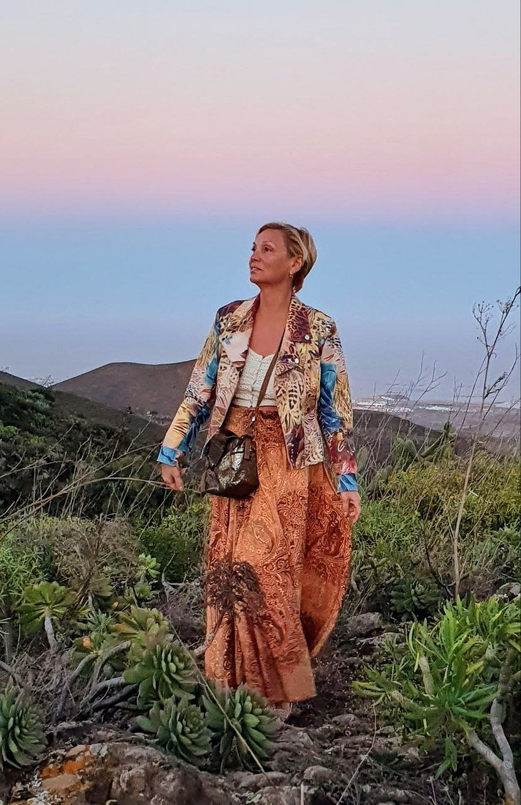

Карта направления
Пересборка жизни
Это направление для жизненных переходов: когда прежняя версия уже не держит, а новую важно собрать быстро, без долгой потери сил, денег и жизненного ресурса.

Три масштаба работы
Три масштаба пересборки жизни
Форматы отличаются масштабом задачи. Квантовая активация работает с одной точкой. Индивидуальный ретрит проводит через один переход целиком. Персональный маршрут собирает новую систему жизни, когда изменения затрагивают несколько связанных сфер.

точечный сдвиг
Квантовая активация
Формат для одной созревшей точки: решение, переход, запуск, внутренний сдвиг или новая форма действия, которую не удаётся пройти привычным способом.
Переход от расплывчатого ощущения “пора менять” к ясному внутреннему движению и следующему шагу.

личное погружение
Индивидуальный ретрит
Живой формат для перехода, которому нужна смена среды, тишина, физическое присутствие, личное поле и сопровождение Светланы Страусс.
Переход из привычного шума в пространство, где можно услышать свою новую точку и собрать решение телом.

длинное сопровождение
Персональный маршрут
Работа на 6–9 месяцев, когда есть важная цель, но вокруг неё нужно собрать всю систему жизни: выбор, отношения, дело, тело, деньги и опору.
Переход от отдельных попыток что-то исправить к маршруту, где изменения собираются в устойчивую новую форму жизни.
Как выбирать
Ориентируйтесь на масштаб перехода
Если тема точечная, не нужно сразу брать длинный маршрут. Если переход затрагивает несколько сфер жизни, короткого импульса может быть мало.
Когда нужен сдвиг сейчас
Вы уже чувствуете, где застряли, и хотите собрать решение, действие или внутренний разворот без долгого зависания в переходе.
Квантовая активация смена средыКогда нужен выход из привычного поля
Тема слишком связана с ежедневным ритмом, и ей нужно отдельное пространство, тело, место и живое сопровождение.
Индивидуальный ретрит система жизниКогда меняется не один вопрос
Переход касается отношений, денег, дела, тела и выбора, поэтому важно держать маршрут несколько месяцев.
Персональный маршрут